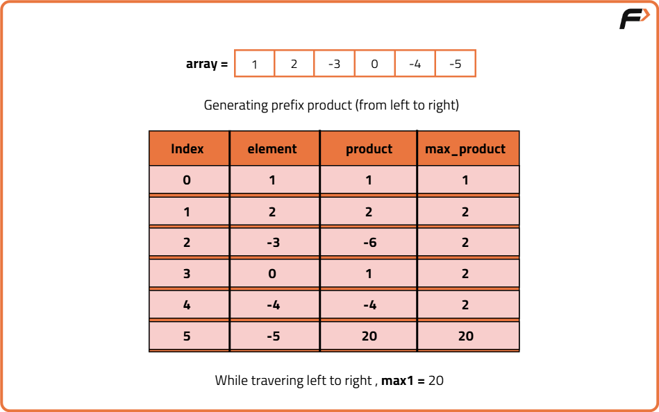
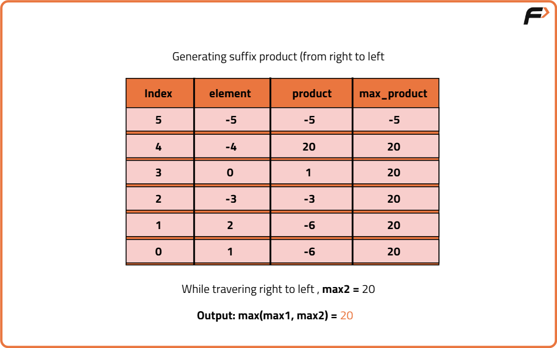
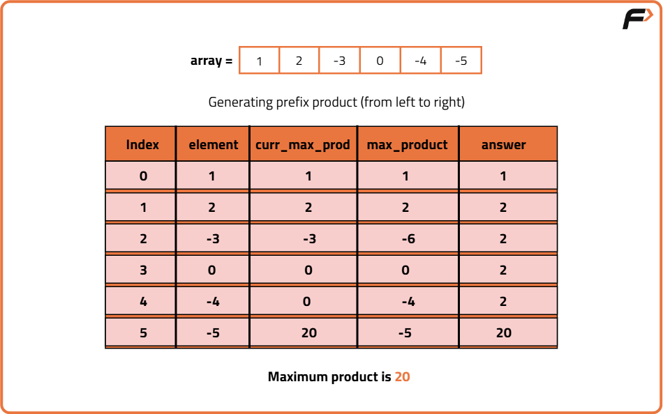

Archived from https://takeuforward.org/data-structure/maximum-product-subarray-in-an-array/
Problem Statement: Given an array that contains both negative and positive integers, find the maximum product subarray.
Examples
Input: Nums = [1,2,3,4,5,0]Output: 120Explanation:
In the given array, 1×2×3×4×5 gives maximum product value.Input: Nums = [1,2,-3,0,-4,-5]Output: 20Explanation:
In the given array, (-4)×(-5) gives maximum product value.
Disclaimer:
Here is the practice link to help you assess your knowledge better.
It's highly recommend trying to
solve it before looking at the solution.
Brute-Force Approach
Algorithm
In the brute force method, we generate all possible subarrays and calculate the product of each subarray. We track the maximum product found among all. Use two nested loops, the outer loop picks the starting index of the subarray and the inner loop picks the ending index. For every subarray defined by start and end, calculate the product and update the maximum product if the current subarray's product is larger.
Code
#include <bits/stdc++.h>
using namespace std;
class Solution {
public:
// This function finds the maximum product
// of any contiguous subarray using brute force
int maxProduct(vector<int>& nums) {
// Initialize the answer with the first element
int maxProd = nums[0];
// Outer loop picks the starting index
for (int i = 0; i < nums.size(); i++) {
// Initialize current product to 1
int prod = 1;
// Inner loop picks the ending index
for (int j = i; j < nums.size(); j++) {
// Multiply current number to product
prod *= nums[j];
// Update maximum product if needed
maxProd = max(maxProd, prod);
}
}
// Return the result
return maxProd;
}
};
int main() {
// Sample input
vector<int> nums = {2, 3, -2, 4};
// Create Solution object
Solution sol;
// Print the result
cout << sol.maxProduct(nums);
return 0;
}
class Solution {
// This function finds the maximum product
// of any contiguous subarray using brute force
public int maxProduct(int[] nums) {
// Initialize the answer with the first element
int maxProd = nums[0];
// Outer loop picks the starting index
for (int i = 0; i < nums.length; i++) {
// Initialize current product to 1
int prod = 1;
// Inner loop picks the ending index
for (int j = i; j < nums.length; j++) {
// Multiply current number to product
prod *= nums[j];
// Update maximum product if needed
maxProd = Math.max(maxProd, prod);
}
}
// Return the result
return maxProd;
}
}
public class Main {
public static void main(String[] args) {
// Sample input
int[] nums = {2, 3, -2, 4};
// Create Solution object
Solution sol = new Solution();
// Print the result
System.out.println(sol.maxProduct(nums));
}
}
class Solution:
# This function finds the maximum product
# of any contiguous subarray using brute force
def maxProduct(self, nums):
# Initialize the answer with the first element
maxProd = nums[0]
# Outer loop picks the starting index
for i in range(len(nums)):
# Initialize current product to 1
prod = 1
# Inner loop picks the ending index
for j in range(i, len(nums)):
# Multiply current number to product
prod *= nums[j]
# Update maximum product if needed
maxProd = max(maxProd, prod)
# Return the result
return maxProd
# Sample input
nums = [2, 3, -2, 4]
# Create Solution object
sol = Solution()
# Print the result
print(sol.maxProduct(nums))
class Solution {
// This function finds the maximum product
// of any contiguous subarray using brute force
maxProduct(nums) {
// Initialize the answer with the first element
let maxProd = nums[0];
// Outer loop picks the starting index
for (let i = 0; i < nums.length; i++) {
// Initialize current product to 1
let prod = 1;
// Inner loop picks the ending index
for (let j = i; j < nums.length; j++) {
// Multiply current number to product
prod *= nums[j];
// Update maximum product if needed
maxProd = Math.max(maxProd, prod);
}
}
// Return the result
return maxProd;
}
}
// Sample input
const nums = [2, 3, -2, 4];
// Create Solution object
const sol = new Solution();
// Print the result
console.log(sol.maxProduct(nums));
Complexity Analysis
Time Complexity: O(N^2), we check the product of all possible subarrays using two nested loops. Space Complexity: O(1), No extra space is used.
Optimal Approach - 1
Algorithm
The product of elements in a subarray can become large when there are positive numbers, but negative numbers and zeros make it tricky. A negative number can flip a large product into a negative one, but if we meet another negative later, the sign flips back to positive. Therefore, to capture all possible max products, we do two things:
Traverse the array from left to right (prefix) to build cumulative product.
Traverse the array from right to left (suffix) to catch subarrays ending at the back (helpful when max product is at the end or due to even negatives).
Reset the product to 1 whenever a zero is found, as it breaks the subarray continuity.
By comparing products in both directions at each step, we ensure we don’t miss any possible maximum.


Code
#include <bits/stdc++.h>
using namespace std;
// This function returns the maximum product subarray
// using prefix and suffix traversal
class Solution {
public:
int maxProductSubArray(vector<int>& arr) {
// Store size of array
int n = arr.size();
// Initialize prefix and suffix product
int pre = 1, suff = 1;
// Initialize answer to negative infinity
int ans = INT_MIN;
// Traverse from both left and right
for (int i = 0; i < n; i++) {
// Reset prefix if zero
if (pre == 0) pre = 1;
// Reset suffix if zero
if (suff == 0) suff = 1;
// Multiply prefix with current element from front
pre *= arr[i];
// Multiply suffix with current element from back
suff *= arr[n - i - 1];
// Update the maximum of all products seen so far
ans = max(ans, max(pre, suff));
}
// Return the final answer
return ans;
}
};
int main() {
// Sample input
vector<int> arr = {2, 3, -2, 4};
// Create object of solution
Solution obj;
// Call the function and print the result
cout << obj.maxProductSubArray(arr) << endl;
return 0;
}
// This class contains the function to find maximum product subarray
// using prefix and suffix traversal
class Solution {
public int maxProductSubArray(int[] arr) {
// Get the length of the array
int n = arr.length;
// Initialize prefix and suffix product
int pre = 1, suff = 1;
// Initialize answer with smallest integer
int ans = Integer.MIN_VALUE;
// Traverse from both left and right
for (int i = 0; i < n; i++) {
// Reset prefix if zero
if (pre == 0) pre = 1;
// Reset suffix if zero
if (suff == 0) suff = 1;
// Multiply prefix with current element from front
pre *= arr[i];
// Multiply suffix with current element from back
suff *= arr[n - i - 1];
// Update maximum value so far
ans = Math.max(ans, Math.max(pre, suff));
}
// Return the final result
return ans;
}
}
// Separate Main class for testing
class Main {
public static void main(String[] args) {
// Sample input
int[] arr = {2, 3, -2, 4};
// Create object of Solution
Solution sol = new Solution();
// Call the method and print the result
System.out.println(sol.maxProductSubArray(arr));
}
}
# This function returns the maximum product subarray
# using prefix and suffix traversal
class Solution:
def maxProductSubArray(self, arr):
# Store length of array
n = len(arr)
# Initialize prefix and suffix products
pre, suff = 1, 1
# Initialize answer as negative infinity
ans = float('-inf')
# Traverse from both front and back
for i in range(n):
# Reset prefix if zero
if pre == 0:
pre = 1
# Reset suffix if zero
if suff == 0:
suff = 1
# Multiply prefix with front element
pre *= arr[i]
# Multiply suffix with back element
suff *= arr[n - i - 1]
# Update maximum product so far
ans = max(ans, pre, suff)
# Return the result
return ans
# Sample usage
arr = [2, 3, -2, 4]
sol = Solution()
print(sol.maxProductSubArray(arr))
// This function returns the maximum product subarray
// using prefix and suffix traversal
class Solution {
maxProductSubArray(arr) {
// Get the length of array
const n = arr.length;
// Initialize prefix and suffix products
let pre = 1, suff = 1;
// Initialize answer as negative infinity
let ans = -Infinity;
// Traverse from both directions
for (let i = 0; i < n; i++) {
// Reset prefix if zero
if (pre === 0) pre = 1;
// Reset suffix if zero
if (suff === 0) suff = 1;
// Multiply prefix with front element
pre *= arr[i];
// Multiply suffix with back element
suff *= arr[n - i - 1];
// Update the maximum product so far
ans = Math.max(ans, pre, suff);
}
// Return final result
return ans;
}
}
// Sample usage
const arr = [2, 3, -2, 4];
const sol = new Solution();
console.log(sol.maxProductSubArray(arr));
Complexity Analysis
Time Complexity: O(N), every element of array is visited once. Space Complexity: O(1), constant number of variables are used.
Optimal Approach - 2
Algorithm
In a product-based subarray problem, a negative number can flip the sign, turning a big minimum into a potential maximum. So, we track both the maximum and minimum products at each step. This helps handle negative numbers effectively.
Start by setting the answer, current max product, and current min product to the first number.
For each number in the array starting from the second:
If the number is negative, swap current max and min.
If the product of the current number and previous max is larger than the number itself, update current max to that product; otherwise, set it to the number.
Similarly, if the product of the current number and previous min is smaller, update current min; otherwise, set it to the number.
If the current max is greater than the answer so far, update the answer.
Return the answer at the end.

Code
#include <bits/stdc++.h>
using namespace std;
class Solution {
public:
// This function returns the maximum product
// of any contiguous subarray using optimized approach
int maxProduct(vector<int>& nums) {
// Initialize answer, max and min product as first element
int res = nums[0];
int maxProd = nums[0];
int minProd = nums[0];
// Traverse from second element
for (int i = 1; i < nums.size(); i++) {
// Store current number
int curr = nums[i];
// If current number is negative, swap max and min
if (curr < 0) swap(maxProd, minProd);
// Update max and min product ending at current index
maxProd = max(curr, maxProd * curr);
minProd = min(curr, minProd * curr);
// Update global result
res = max(res, maxProd);
}
// Return the result
return res;
}
};
int main() {
vector<int> nums = {2, 3, -2, 4};
Solution sol;
cout << sol.maxProduct(nums);
return 0;
}
class Solution {
// This function returns the maximum product
// of any contiguous subarray using optimized approach
public int maxProduct(int[] nums) {
int res = nums[0];
int maxProd = nums[0];
int minProd = nums[0];
// Traverse from second element
for (int i = 1; i < nums.length; i++) {
int curr = nums[i];
// Swap if current is negative
if (curr < 0) {
int temp = maxProd;
maxProd = minProd;
minProd = temp;
}
// Update max and min product
maxProd = Math.max(curr, maxProd * curr);
minProd = Math.min(curr, minProd * curr);
// Update result
res = Math.max(res, maxProd);
}
return res;
}
}
public class Main {
public static void main(String[] args) {
int[] nums = {2, 3, -2, 4};
Solution sol = new Solution();
System.out.println(sol.maxProduct(nums));
}
}
class Solution:
# This function returns the maximum product
# of any contiguous subarray using optimized approach
def maxProduct(self, nums):
res = nums[0]
maxProd = nums[0]
minProd = nums[0]
# Traverse from second element
for i in range(1, len(nums)):
curr = nums[i]
# Swap max and min if current is negative
if curr < 0:
maxProd, minProd = minProd, maxProd
# Update max and min product
maxProd = max(curr, maxProd * curr)
minProd = min(curr, minProd * curr)
# Update result
res = max(res, maxProd)
return res
nums = [2, 3, -2, 4]
sol = Solution()
print(sol.maxProduct(nums))
class Solution {
// This function returns the maximum product
// of any contiguous subarray using optimized approach
maxProduct(nums) {
let res = nums[0];
let maxProd = nums[0];
let minProd = nums[0];
// Traverse from second element
for (let i = 1; i < nums.length; i++) {
let curr = nums[i];
// Swap max and min if current is negative
if (curr < 0) {
[maxProd, minProd] = [minProd, maxProd];
}
// Update max and min product
maxProd = Math.max(curr, maxProd * curr);
minProd = Math.min(curr, minProd * curr);
// Update result
res = Math.max(res, maxProd);
}
return res;
}
}
const nums = [2, 3, -2, 4];
const sol = new Solution();
console.log(sol.maxProduct(nums));
Complexity Analysis
Time Complexity: O(N), every element of array is visited once. Space Complexity: O(1) , only constant variables are used.